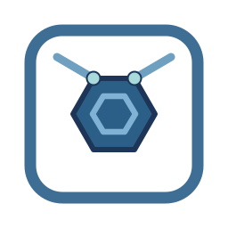

A narrated introduction and one explainer clip. They play here in the browser - no download needed. Both are captioned, so sound is not required.
The questions teams putting agents on real work keep asking, each introduced, asked, and then answered by the mechanism that handles it: a team that fits the project, safety without overthinking or burning tokens, keys that stay secret, an agentic loop with ceremony matched to the change, specs a human can confirm and an AI can read, seeing and controlling how the agents work, and harness-view turning a vague score into a worklist with one-click fixes and a published rubric. Voiced, with a music bed, and captioned for muted playback.
What the introduction leaves out. The operating flow end to end, then a roster derived from the contract and the modules that exist, rather than every agent and a hundred skills installed before anyone read the code. Then the mechanisms that keep it honest, each with the problem it solves: Skill Discovery reads this project's manifests to find skills that match its stack, Skill Wire connects a chosen skill to the agent seat that needs it, and harness-view answers whether any of it is actually wired right.
ナレーション付きのイントロダクションと、解説クリップ1本。ブラウザでそのまま再生できます - ダウンロード不要。どちらも字幕付きなので、音声がなくても内容を追えます。
エージェントを実務に使うチームが繰り返し尋ねる問いを、前置き、問い、それに答える仕組みの順で紹介します。プロジェクトに合ったチーム、考えすぎやトークンの浪費のない安全、キーの保護、変更に見合った手続きのエージェント的なループ、人が確認でき AI が読める仕様、エージェントの動きを見て制御すること、そして曖昧な点数をワンクリック修正付きの作業リストと公開された採点表に変える harness-view。音楽付きで、音声なしでも追えるよう字幕を焼き込んでいます。
イントロで触れない部分です。運用フローの全体像、続いて、誰かがコードを読む前にエージェント全種とスキル百個を入れるのではなく、契約と実在するモジュールから導くロースター。さらに、それを健全に保つ仕組みを、それぞれが解く課題とともに。スキル探索はこのプロジェクトのマニフェストを読んでスタックに合うスキルを見つけ、スキル配線は選ばれたスキルを必要とするエージェントの席につなぎ、harness-view は本当に正しく配線されているのかに答えます。